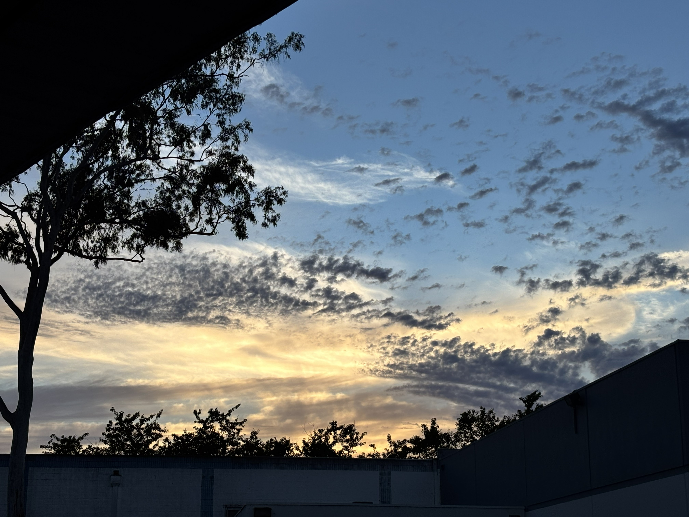

Latest Finding
During our initial investigation at Goleta Beach, Starlink Mini reached download speeds up to 225 Mbps with latency as low as 2 ms.
These are observed field results under documented conditions.
Additional testing will continue as evidence accumulates.
Read the full Starlink Mini investigationInvestigation Standard
The record comes before the conclusion.
Question
A narrow claim is defined before testing begins.
Field Testing
Conditions, tools, and repeatability are documented in the field.
Evidence Collection
Observations, measurements, and limitations are preserved in the record.
Published Findings
Only supported conclusions move into the published record.